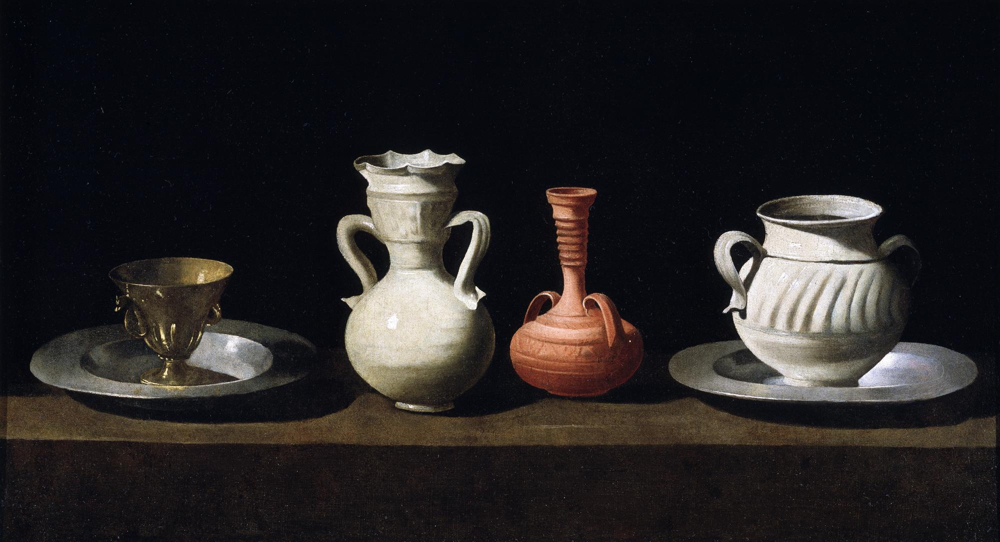
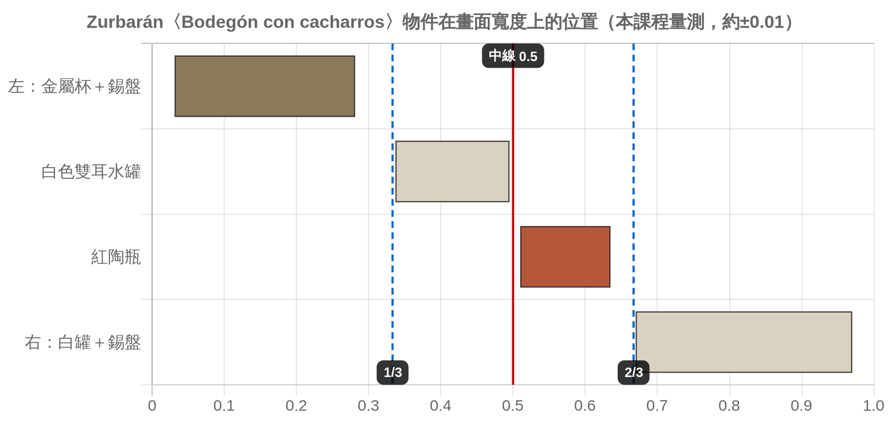
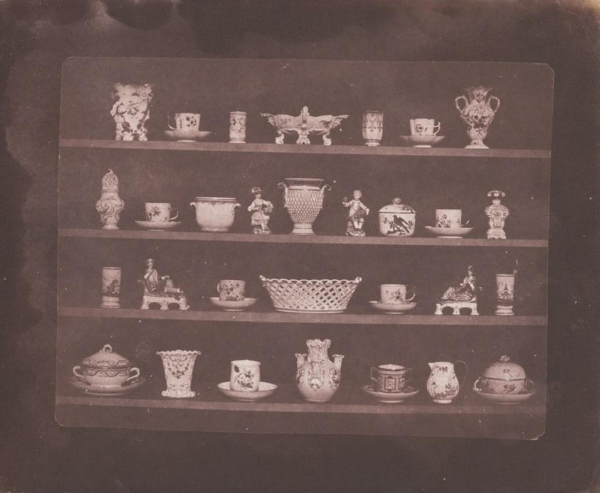
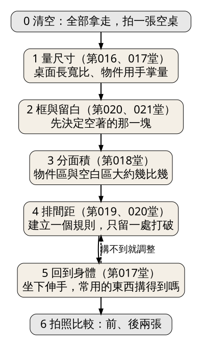

單元三的六堂課，今天全部收進一張桌子。主例是 Francisco de Zurbarán 約 1650 年的〈Bodegón con cacharros〉（器皿靜物）：四件器物排在一道檯面上，畫面的中線剛好落在中間兩件器物之間那道窄縫裡，沒有一件東西佔住正中央。對照的是 William Henry Fox Talbot 1844 年拍的一櫃瓷器。練習 30 分鐘：不買、不添任何東西，只動位置和間距，重排你的桌面。
史料（Art Institute of Chicago 典藏說明） 1844 年，攝影術的發明人之一 William Henry Fox Talbot 開始分冊出版《The Pencil of Nature》，這是第一本以照片當插圖、公開販售的書，到 1846 年共出了六冊。第一冊的第三張圖版叫〈Articles of China〉（瓷器），拍的是幾層架子上排得滿滿的瓷杯、瓷瓶和小人偶（見圖 3，放在下面的跨領域對照一節）。
Talbot 替這張照片寫的說明很實際。他說，一位收藏家整櫃的老瓷器，用相機拍下來，花的時間不比動筆寫一份財產清單多。他還半開玩笑地補了一句：要是哪天小偷把這些寶貝偷走了，這張照片可以拿到法庭上當一種新式的證據，至於法官認不認，就交給律師去爭。
可是你看那張照片，會發現它不只是清單。每一層中間放一件最大的器物，左右兩邊大致成對：杯對杯、瓶對瓶、人偶對人偶。為了讓一張「財產紀錄」拍得清楚，照片裡看得出東西先被排過。今天要做的事情一樣：在一個有邊框的平面上，決定東西放哪裡、空出哪裡。
先把第 016 到 021 堂收成六個帶得走的問題。每一條都附上它的出處與證據強弱，細節請回看各堂（來源已在各堂查核，列於文末）。
一、比例：這個長方形有多長？（第 016 堂）實證研究 Fechner 1876 年的矩形偏好實驗，黃金矩形最常被選，但 1.5:1 到 1.77:1 一整段都受歡迎（依 Green 1995 轉述）。McManus 1980 發現團體偏好的高峰很寬、個人差異很大。Markowsky 在演講現場請聽眾挑選，最常被選的是 1.83。可以帶走的結論：人對「比正方形長一些、又不太狹長」的長方形有寬鬆的偏好，1.618 沒有被證明是唯一答案。
二、尺度：照誰的身體量？（第 017 堂）經典理論 Vitruvius《建築十書》卷三主張神廟各部分要像人體一樣成簡單分數比例。Le Corbusier 的 Modulor 以一個 183 公分的男人為基準，他本人也承認照這套尺寸照樣可能做出難看的東西（依 Ostwald 2001 書評轉述）。
三、面積：空的和滿的各佔幾份？（第 018 堂）經典理論＋實證研究 John Thomas Smith 1797 年在《Remarks on Rural Scenery》寫下「Rule of thirds」，講的是面積約二比一，他認為二比一比剛好一半好。今天手機上的九宮格交點是後來的版本；Amirshahi 等人 2014 年的研究發現，高評分照片與博物館畫作並沒有特別遵守它。
四、分組：幾個一組、幾層一套？（第 019 堂）經典理論 Cooper 與 Meyer 1960 年的《The Rhythmic Structure of Music》主張，節奏是輕拍圍繞一個重拍組成的群，下層的一整群到了上層又變成一個單位。這套想法來自音樂，搬到桌面上，可以問：哪幾件東西被看成一組？這幾組又組成什麼？
五、規則與斷點：先建立秩序，再打破一處（第 020 堂）經典理論 Gombrich 在《The Sense of Order》（1979）主張，人預設規則會延續，規則一斷，斷點就跳出來；裝飾者做的事可以歸成框、填、連（依 Zerner 1979 書評轉述）。愉悅落在單調與混亂之間。
六、留白：空白有沒有被撐起來？（第 021 堂）經典理論 原研哉在《白》（2008）主張，簡單的形狀像一個空的容器，讓觀者放進自己的意思。第 021 堂從長谷川等伯的《松林圖屏風》看到，空白要被周圍的筆墨撐起來，才會被讀成霧與距離，否則就只是空著。
六條裡，只有第一、三條背後有成系列的偏好實驗，而且結果都比口號保守；其餘四條是理論家的主張。練習時，把它們當成檢查用的問題，別當成公式。
史料（依二手文獻：西班牙文維基百科〈Bodegón con cacharros (Zurbarán)〉條目，引 Juan J. Luna《Guía del Prado》1992 等；Prado 官網本次連線遭拒，未能直接開啟） Francisco de Zurbarán（1598–1664），〈Bodegón con cacharros〉，約 1650 年，畫布油畫，46 × 84 公分，馬德里 Prado 美術館藏（編號 P2803）。畫上沒有簽名也沒有日期。1940 年由收藏家 Francesc Cambó 捐贈；Cambó 也買下了另一件幾乎相同、同樣被認為出自 Zurbarán 之手的版本，今藏巴塞隆納的加泰隆尼亞國家藝術博物館（MNAC）。

圖 1｜Francisco de Zurbarán，〈Bodegón con cacharros〉，約 1650 年，Museo del Prado 藏。來源：Francisco de Zurbarán，Bodegón con cacharros，約 1650。授權：Public domain，來源頁面
畫裡的東西由左到右是：放在錫盤上的一只鍍金銀杯、一件白色雙耳水罐、一件紅陶瓶、放在另一只錫盤上的白色陶罐（依二手文獻：Universidad de Navarra 2024 年〈本月藏品〉專文引 Prado 說明；兩件白色陶器屬於塞維亞 Triana 窯一帶的 alcarraza）（見圖 1）。背景是一片深黑，沒有窗、沒有布、沒有水果。
拿六個問題一條一條看。下面的數字是我在 Commons 1280 像素寬的掃描檔上量的，掃描檔可能略有裁切，誤差約 ±0.01 個畫面寬（見圖 2）。

圖 2｜四組器物在畫面寬度上各佔哪一段，紅線為畫面中線，藍色虛線為三分線。數據為本課程在 Commons 掃描檔上的量測，約略值。來源：本課程依 Zurbarán〈Bodegón con cacharros〉掃描檔量測繪製。授權：本課程自製圖解，來源頁面
比例 46 × 84 公分，長寬比約 1.83，比黃金矩形更長一些。這個數字恰好等於 Markowsky 聽眾最常挑的 1.83，但第 016 堂講過，一個數字湊得上，什麼都證明不了：我們不知道 Zurbarán 為什麼選這個尺寸，可能只是手邊畫布的規格。比較有用的觀察是，一張橫長的畫布讓四件器物可以排成一排，各自佔一段，不必上下疊。
框 兩端各有一只錫盤，盤子比上面的器物寬，像書架兩頭的書擋，把整排東西收住。左邊盤緣離畫框約 0.031，右邊約 0.030，兩邊留的空幾乎一樣多。用 Gombrich 的話來說，這是先「框」出範圍。
規則與斷點 四組器物之間有三道空隙，寬度並不相等：左邊盤子和白水罐之間約 0.056，白水罐和紅陶瓶之間只有約 0.015，紅陶瓶和右邊盤子之間約 0.035。中間兩件幾乎碰在一起，兩端各自隔開。高度也有變化：金屬杯最矮，白水罐最高，紅陶瓶和右邊的白罐差不多高。眼睛看得出「一排、間隔、兩端有盤」的規則，又在中間那對靠得特別近的地方停下來。
分組 照 Wertheimer 的接近因素（第 009 堂），中間兩件會被看成一對。往上一層看，整排可以讀成三組：盤上的杯、中間一對、盤上的罐，兩端相似、中間不同，像一個「甲、乙、甲」的結構。這是本課程借 Cooper 與 Meyer 的層級想法做的讀法，不是畫家留下的說明。
中線 畫面中線 0.5 落在 0.495 到 0.510 之間，正好是白水罐和紅陶瓶之間那道最窄的縫（見圖 2）。整幅畫的對稱軸上是空的，兩件形狀、顏色都不同的器物分站兩側。對照第 018 堂：Smith 反對把畫面剛好對分，這幅畫的確沒有一條「實物」把畫面切成兩半，但它也沒有迴避中央，而是讓一道縫站在那裡。
三分線 白水罐的左緣約在 0.337，右邊盤子的左緣約在 0.670，都很靠近三分線。這正是第 016 與 018 堂提醒過的情況：量的是邊緣還是中心、允許多少誤差，都是我事後選的。如果改量器物中心，數字是 0.42 和 0.82，就對不上了。這裡只記下巧合，不推論畫家的意圖。
留白 最高的白水罐頂端在畫面高度約 0.28 的位置，它上方是一整片沒有任何東西的暗色，金屬杯上方空得更多。這片黑之所以不像「沒畫完」，是因為光很強：西班牙文維基百科條目形容畫中的光強烈、對比鮮明，屬於明暗對照的畫法，白陶器的弧面被照得發亮，暗背景才被讀成器物後面的深處。這和第 021 堂等伯的霧是同一個條件：空白旁邊有東西在告訴你怎麼讀它。
要保留的疑點 同一條目的註釋指出，器物彼此之間沒有投下影子，有人據此推測 Zurbarán 是把每件器物分開畫的，各自是一份獨立的習作，只靠構圖把它們合成一個整體。另一件 MNAC 版本也有學者認為有他的兒子 Juan de Zurbarán 參與。所以「間距是精心設計的」只是一種讀法，我們分析的是畫面效果。
史料（Art Institute of Chicago 典藏紀錄；Talbot 說明文字依 PCCA 線上轉錄） William Henry Fox Talbot，〈Articles of China〉，1843–44 年，鹽紙印相，影像 13.7 × 18.2 公分，《The Pencil of Nature》第一冊圖版 III。

圖 3｜四層架子上的瓷器，每層以一件大器物居中，兩側大致成對。來源：William Henry Fox Talbot，Articles of China，1843–44，Art Institute of Chicago 藏。授權：Public domain（館方開放典藏 CC0），來源頁面
把它和 Zurbarán 並排看（見圖 3）。兩者都在一道水平的檯面上排東西，用的手段卻相反。Zurbarán 一道檯面只放四件，上方留一大片黑；Talbot 四層架子幾乎排滿，每層七到九件，空隙只剩器物之間的一點距離。
Talbot 的秩序靠的是左右對稱。拿第三層來看：兩端各一只直筒杯，往內各一個坐著的人偶，再往內各一只帶碟的杯子，正中央是一只編籃形的大碗。每一層都有一件最大的放中間，這正是 Zurbarán 畫裡空著的位置。架板本身就是框，四條橫線把整櫃東西分成四列，像四行字。以上是我對照片的觀察，Talbot 的說明文字沒有談排列。
兩種排法服務不同的目的。Talbot 自己說，這張照片是清單、是證據，東西要多、要一件不漏、要看得清楚，對稱讓每一件都有固定的位置，點名時不會漏。Zurbarán 的四件器物沒有要被清點，它們像是要被一件一件慢慢看，器物上方和兩端都留著空。你的桌面比較像哪一種，要看你每天在上面做什麼。
誤解一：整理桌面就是收得越空越好。第 021 堂談過，空白要有東西撐著才會被讀成「空間」。Zurbarán 的黑背景有效，是因為四件器物被照得很亮、排得很清楚。一張什麼都沒有的桌子，照片拍起來只是一張空桌。
誤解二：照著某個比例擺，就一定好看。Green 1995 回顧黃金比例的偏好研究，結論是效果存在但很脆弱；Amirshahi 等人 2014 年也沒有發現好照片特別遵守三分法；Le Corbusier 自己承認照 Modulor 也可能做出難看的東西。比例能幫你檢查，判斷還是要靠眼睛和手。
誤解三：Zurbarán 每件器物都有固定的宗教象徵。這幅畫的解讀很多：Universidad de Navarra 的專文提到有人把它的簡樸連到修院生活、有人讀出時間流逝，也有學者認為它是一份練習作。這些都是後人的詮釋，沒有畫家本人的文字可以確認。分析構圖時，先看得到的東西：位置、間距、光。
單元練習，總長 30 分鐘。只用手機、紙筆和你桌上本來就有的東西，不另外買或拿新物品進來。書桌、餐桌、辦公桌都可以。
看（5 分鐘） 先不要動任何東西。用手機拍兩張「整理前」：一張從正上方往下拍，一張坐在椅子上、從你平常的視線高度拍。在紙上列出桌上所有物品，數一數有幾件；再用一句話寫下你覺得這張桌子現在最亂的地方在哪裡。
做（20 分鐘） 照圖 4 的順序做。

圖 4｜重排桌面的六個步驟，括號內為對應的課堂。來源：本課程依第 016–021 堂所引 Markowsky（1992）、Vitruvius、Le Corbusier、Smith（1797）、Cooper & Meyer（1960）、Gombrich（1979）、原研哉（2008）繪製。授權：本課程自製圖解。
回顧（5 分鐘）
本堂新查核的來源
來源 | 來源類型 | 查核日期 |
Wikimedia Commons：Zurbaran - Bodegon.jpg（作者、約 1650 年、Public domain、來源標為 Museo del Prado） | 史料（圖 1 授權頁；圖 2 量測所用掃描檔） | 2026-11-18 |
史料（依二手文獻） | 2026-11-18 | |
史料（依二手文獻） | 2026-11-18 | |
史料（未開啟） | 2026-11-18 | |
史料（圖 3 授權頁） | 2026-11-18 | |
史料 | 2026-11-18 |
前幾堂已查核、本堂沿用的來源
來源 | 來源類型 | 查核日期 |
Green, C. D. 1995. All that glitters. Perception 24: 937–968（Fechner 1876、McManus 1980） | 實證研究（回顧） | 2026-11-12 |
Markowsky, G. 2005. Book review: The Golden Ratio. Notices of the AMS 52(3)（現場調查 1.83） | 實證研究（非正式）／史料 | 2026-11-12 |
經典理論 | 2026-11-13 | |
Ostwald, M. J. 2001. Review of The Modulor. Nexus Network Journal 3(1) | 經典理論（書評） | 2026-11-13 |
John Thomas Smith《Remarks on Rural Scenery》1797（archive.org） | 史料／經典理論 | 2026-11-14 |
Amirshahi 等 2014. Evaluating the Rule of Thirds in Photographs and Paintings. Art & Perception 2 | 實證研究 | 2026-11-14 |
經典理論 | 2026-11-15 | |
Zerner, H. 1979. The Sense of Sense（Gombrich《The Sense of Order》書評） | 經典理論（二手轉述） | 2026-11-16 |
經典理論 | 2026-11-17 | |
實證研究 | 2026-11-11 |
延伸閱讀：Talbot《The Pencil of Nature》全書可在 Project Gutenberg（電子書 33447）讀到，每張圖版都附他自己寫的一段說明。